グループアラーム：目覚まし時計・シフト勤務対応・祝日除外・時差対応・バッテリー切れアラート
Google Play でダウンロードグループアラーム
テレワーク・出社・シフト勤務
どんなライフスタイルにも柔軟に対応できるアラームアプリです。
シフト勤務のように日ごとにスケジュールが変わる方にも最適！
グループのアラームを一括ON/OFF可能。
毎週の設定で、祝日を除外する機能も搭載。
日付指定の1回だけのアラームも設定可能。
停止は、スワイプ（スライド）/タップ（ボタン）の選択可能。
スヌーズ機能あり。
バッテリー切れのアラート機能あり。
その日の運勢占いを、ねこアイコンで表示。
■グループアラームで1日の流れを一括コントロール！
- 起床・仕事開始・昼休み・午後再開・退勤まで、1日の予定を1つのグループとして簡単セット
- 「テレワーク」「出社」「早番」「遅番」「夜勤」「休日」など、複数のスケジュールをグループで登録・切り替え可能
■急なスケジュール変更もスムーズ対応！
- 「出社」から「テレワーク」、「早番」から「遅番」への切り替えも曜日設定をタップするだけで、アラーム時刻を一括変更
- 突然の予定変更にも、あわてない毎日へ
■祝日対応
毎週のアラームで、祝日の除外設定が可能。
祝日設定メニューから、祝日データ一覧が確認でき、不要な祝日の削除も可能。
また、祝日を独自に追加したい場合、カスタム祝日で設定可能。
■スヌーズ機能
スヌーズ機能をONにしておくと、アラーム停止画面でスヌーズが可能。
スヌーズ間隔は2～15分で設定可能。スヌーズの最大回数も3～10回で設定可能。
■日付指定のアラーム
日付指定のアラームは、年月日で指定できるので、予定が決まった時点で即設定可能。
■指定タイムゾーンアラーム
指定した国・地域の時刻でアラーム時間を設定可能。
他国を指定タイムゾーンに設定しておくと、日本時間に自動変換してアラームを鳴らせます。
逆に、日本を指定タイムゾーンに設定しておくと、海外に移動しても、現地の時間に変換してアラームが鳴ります。
■ウィジェット
- 現在の月日時分秒、次のアラーム日時を表示
- 1秒更新と5秒更新の2種類を用意
- 時計としても利用可能
- 次のアラーム日時だけのシンプルなものも用意
■バッテリー切れアラート
- バッテリー残量がしきい値以下になると、システム音またはバイブで充電を促します（初期値9%）
■占い機能
- アラーム停止画面で、その日の運勢をねこアイコンで表示
■その他の便利機能
- アラームごとにメロディ・バイブのON/OFFを個別にカスタマイズ
- グループ単位での有効/無効の切り替え
- 停止方法：スワイプ/タップ選択可能
- グループは長押しで並び替え可能
- エクスポート/インポートでデータ移行可能
■こんな人におすすめ
- シフト勤務で毎日違う生活リズムを管理したい人
- テレワークと出社を日によって切り替える人
- 平日と休日で異なる1日を過ごす人
- 祝日は自動でアラームOFFにしたい人
- 特定の日付だけのアラームを設定したい人
- 海外のイベント時間に合わせたい人
- 海外旅行中でも日本時間で管理したい人
- 充電忘れでアラーム失敗したことがある人
- 運勢をチェックしたい人
- 秒表示の時計が欲しい人
■設定について
一覧画面右上の3点マークから設定可能
- アラーム停止方法：スワイプ / ボタン
- アラーム音：システム音 / やさしい音声 / 元気な音声
- スヌーズ：間隔（2～15分）/ 最大回数（3～10回）
- 画面消灯設定：ON / OFF
- オーバーレイ表示：ON / OFF
- バッテリーアラート：音 / バイブ / しきい値設定
- 祝日設定：国 / 一覧 / カスタム祝日
- 誕生日設定（占い用・外部送信なし）
- バックアップ：エクスポート / インポート
使い方はとてもシンプル。
見やすく直感的で柔軟な操作性。
あなたの毎日にリズムと余裕を生み出す、頼れるアラームアプリです。
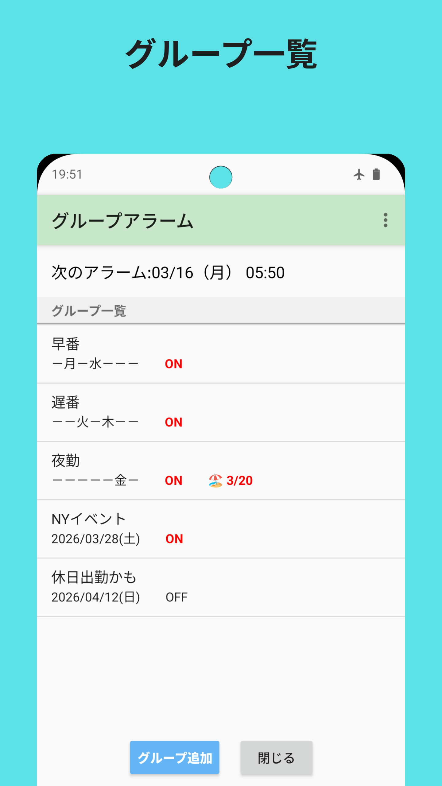
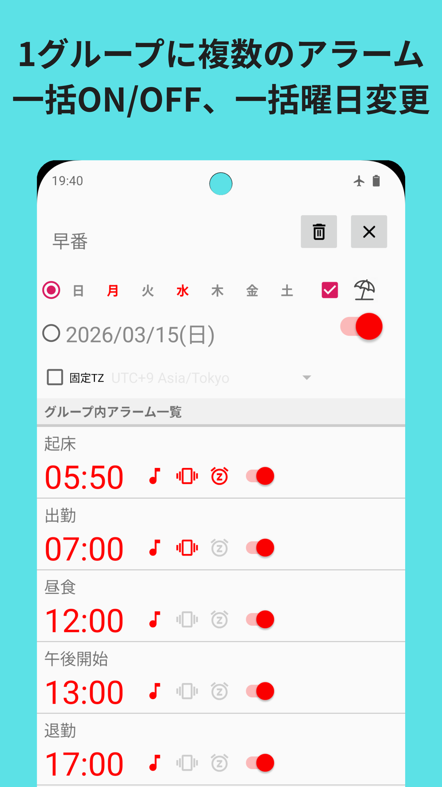
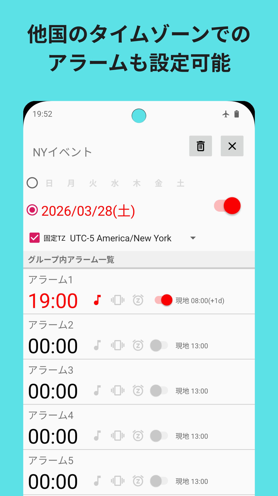
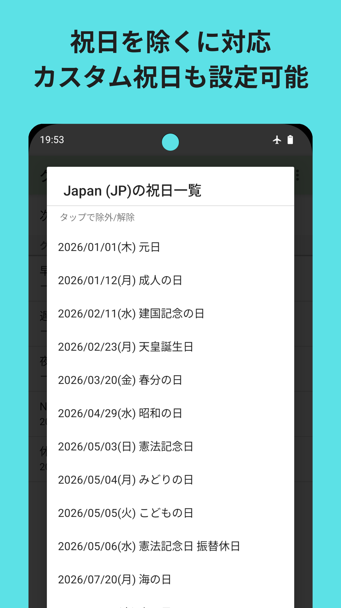
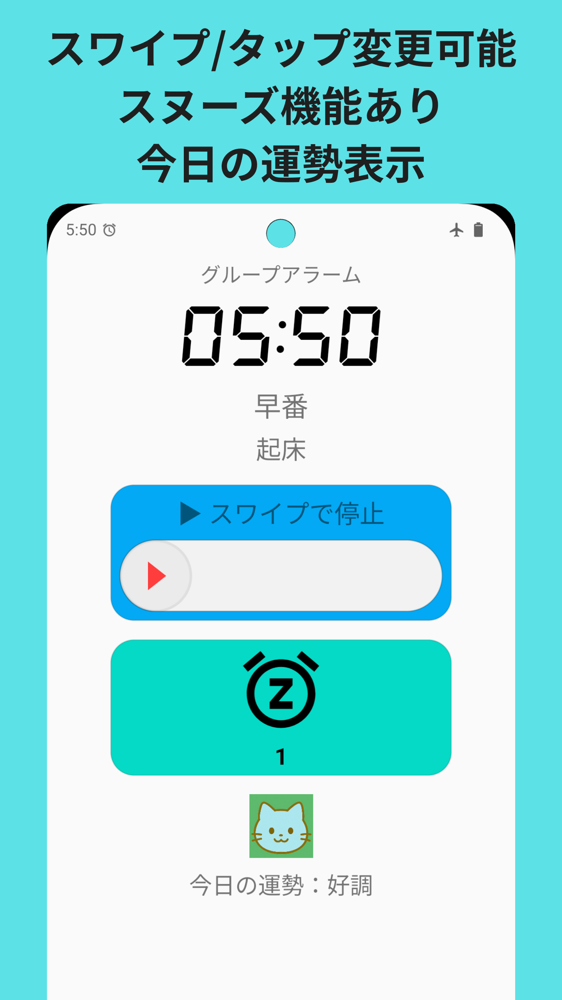
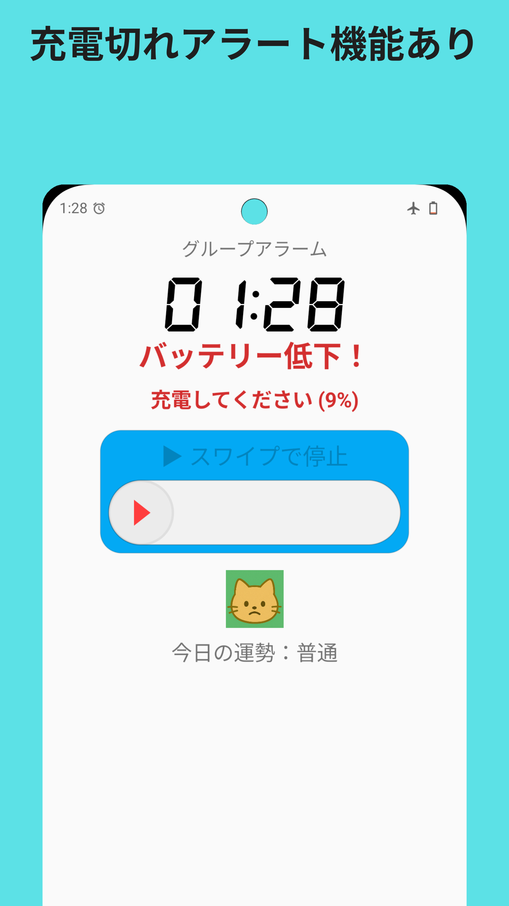
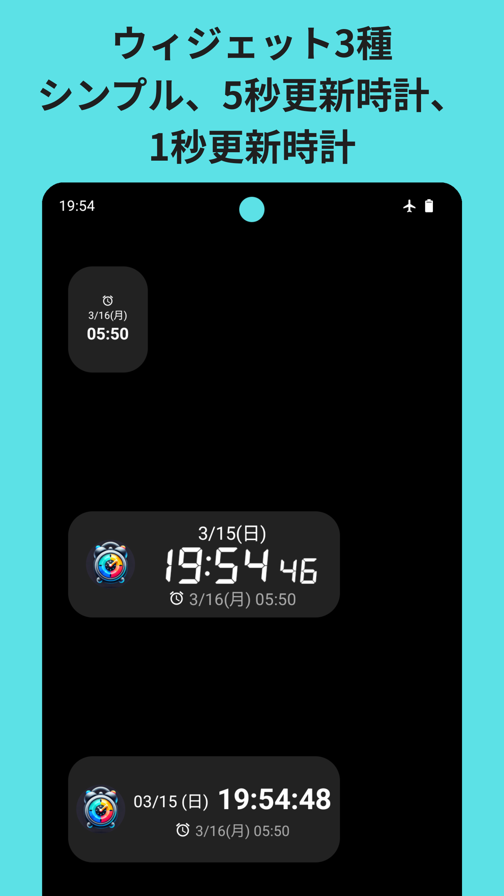
★ レビュー記事掲載のお知らせ
アプリブ様にレビュー記事を掲載していただきました！
地震予知モニター：スマホで地震予知、異常検知
発生乱数の偏りから地震の前兆などの異常を検知するアプリ。10秒毎の乱数ビットの比率、累積偏りをグラフ化。
Google Play でダウンロード【詳細説明】
地震予知モニターは、1998年にプリンストン大学で始まった
「地球意識プロジェクト（Global Consciousness Project：GCP）」※の実験原理を参考に、
Android端末のハードウェア乱数から得られる0/1ビット列に統計的偏りが生じるかを観測するアプリです。
10秒毎に“1”の出現割合を集計・可視化し、累積偏りが大きい場合、異常状態と考えられます。
※GCPは世界各地に設置したハードウェア乱数生成器（RNG）で得たデータと、大規模イベント時の乱数偏差を解析する国際共同研究です。
https://www.global-mind.org/
米国同時多発テロや東日本大震災の時も乱数の偏りが大きかったそうです。
■ 主な機能
- ハードウェア乱数取得：SecureRandomによる0/1ビット列を10秒毎に50ビット取得
- 10秒毎の“1”出現割合を自動計算・更新
- 10秒毎の乱数比率をグラフ表示
- 乱数比率の累積偏りをグラフ表示
- アプリを閉じても、バックグラウンドで乱数を継続取得
■ 使い方ガイド
- アプリを起動し「START」をタップ
- バックグラウンドで乱数取得＆集計を継続
- 「瞬時乱数グラフ表示」をタップで、乱数比率をリアルタイムグラフで確認
- 「累積Zスコア表示」をタップで、乱数比率の累積偏りをリアルタイムグラフで確認
■ ご注意
本アプリはあくまで乱数の比率を計算するものです。地震予知を保証するものではありません。
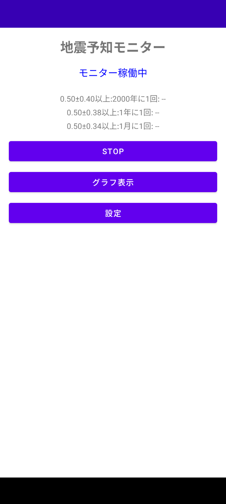
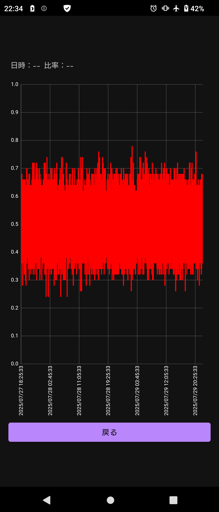
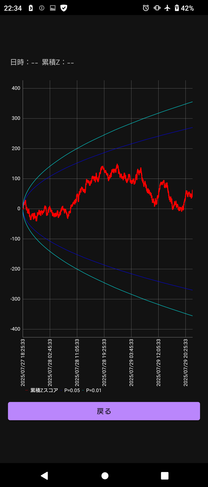
ガチャジグソー：回して集める美麗パズル
ガチャを回してピースを集めよう！完成した美麗なイラストはスマホの壁紙に設定できる、コレクション＆パズルゲーム。
Google Play でダウンロードガチャジグソー
【ガチャ×ジグソーパズルの新感覚ゲーム！】
「ガチャジグソー」は、ガチャを回してピースを集め、美しい一枚のイラストを完成させる新感覚のコレクションアプリです。
幻想的なお城や光る森、星空など、様々なテーマの美麗イラストがあなたを待っています！
🧩 遊び方はとても簡単
- 時間経過や広告視聴で「コイン」をゲット！
- コインを使ってガチャを回し、パズルのピースを獲得！
- 25個のピースをすべて集めると、美しいイラストが完成し次のステージへ！
✨ ガチャジグソーの魅力的な機能
🔹 安心の「新ピース確率アップ」システム
ガチャでゲットしたピースが「ダブる」ごとに、次回以降のガチャで新しいピースが出る確率がどんどんアップ！
「あと1ピースが出ない…」というストレスを軽減し、最後まで楽しくコレクションできます。
🔹 完成したイラストをスマホの壁紙に！
パズルが完成すると「ギャラリー」にイラストが保存されます。
拡大・縮小や位置調整を行い、そのままホーム画面やロック画面の壁紙に設定可能！
お気に入りの一枚を自分好みに飾ろう。
🔹 機種変更でも安心のデータ引き継ぎ
これまでに集めたパズルやコインのデータをバックアップ可能。
機種変更時も簡単に復元して続きから遊べます。
日々のスキマ時間での暇つぶしや、美しいイラストをコツコツ集めるのが好きな方にぴったりのアプリです。
今すぐダウンロードして、すべての美麗パズルのコンプリートを目指しましょう！
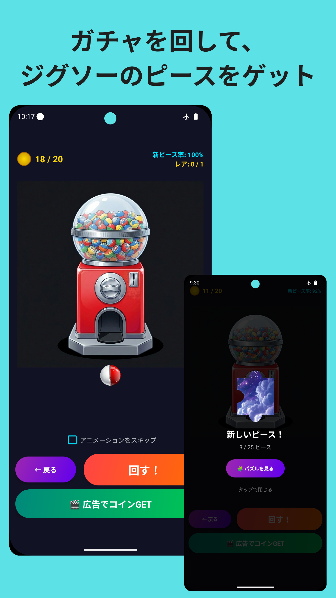
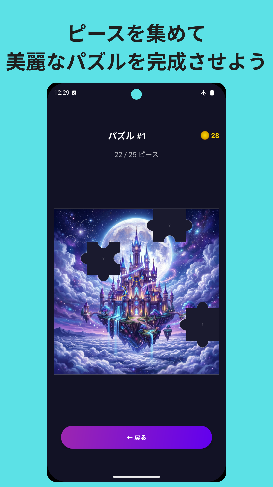
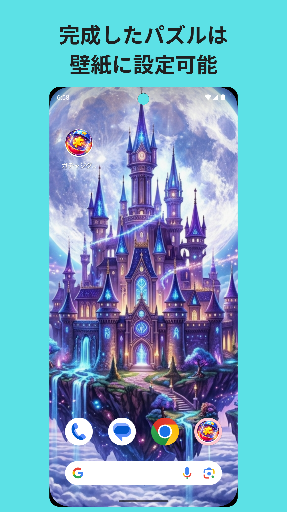
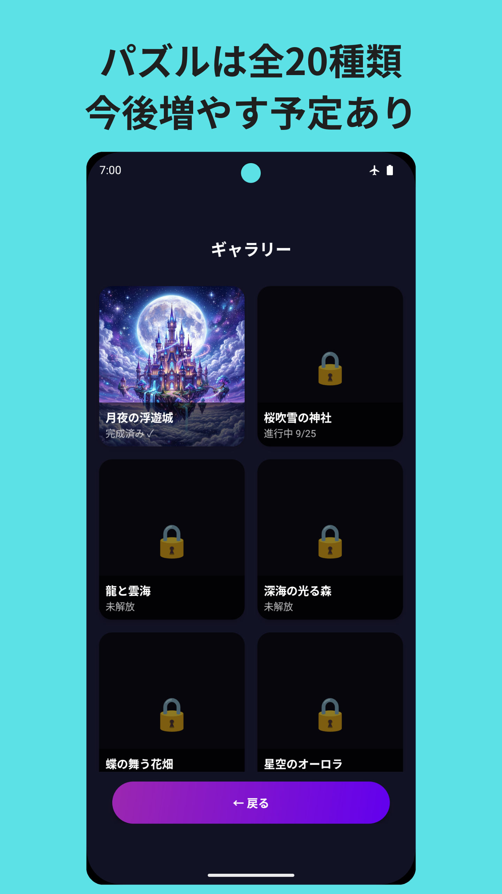